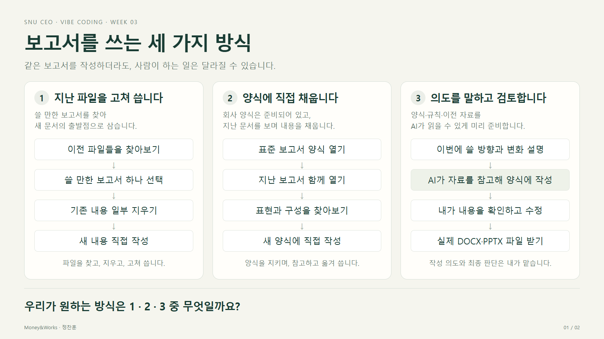
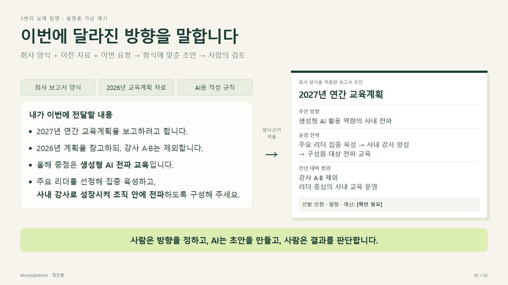
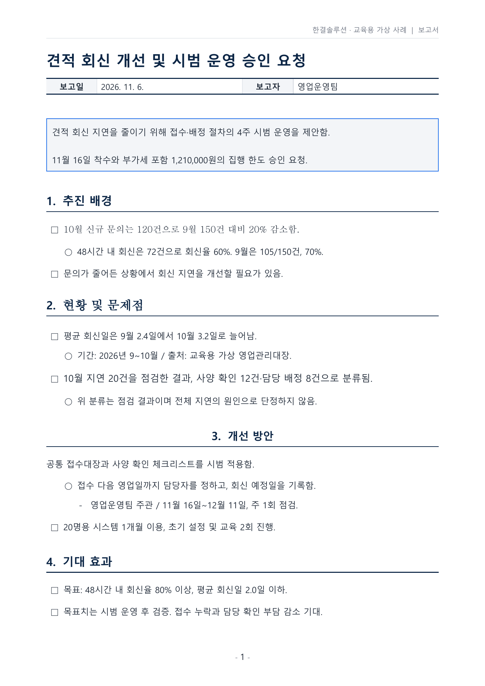
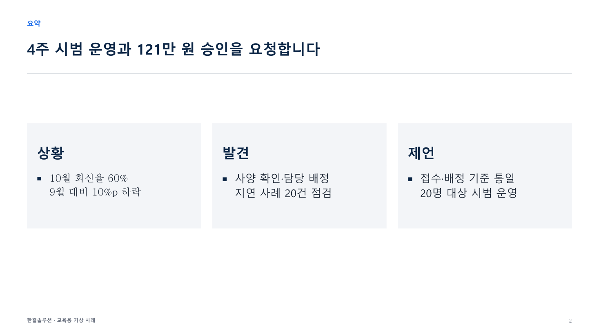

오늘 만들고 싶은 장면
회의 메모나 새 자료를 입력하면, 우리 회사 형식의 보고서·품의서·슬라이드가 만들어집니다. 내용을 확인하고 파일을 내려받거나 지정한 폴더에 저장합니다. 직원에게도 같은 방법을 전달해 반복해서 사용할 수 있습니다.
우리 회사에서는 아래 세 가지 중 어느 방식으로 보고서를 쓰나요?


오늘 만들 방식 확인하기
3번입니다. AI가 회사 양식과 이전 자료를 참고해 초안을 작성합니다. 사람은 이번에 달라진 방향을 설명하고 결과를 검토합니다.


이제 3번을 실습합니다. 먼저 AI가 따를 회사 양식과 작성 규칙부터 정리합니다.
오늘의 흐름
정리 전 파일 1개 → ① 표준화 → 표준 양식 + MD → ② 새 문서 작성 → 실제 결과 확인 → ③ 스킬 제작·시험 → ④ 직원 전달 준비
| 단계 | 내가 확인할 것 | 남는 결과 |
|---|---|---|
| 1. 표준화 | 같은 역할의 제목·본문·표가 같은 기준을 따르는가? | 정리된 DOCX 또는 PPTX + 양식기준.md |
| 2. 새 문서 작성 | 두 파일에 새 내용을 주면 원하는 문서가 나오는가? | 새 내용으로 만든 실제 문서 |
| 3. 스킬 제작·시험 | 새 대화에서도 같은 절차로 만들 수 있는가? | 스킬 + 다른 자료로 시험한 결과 |
| 4. 직원 전달 준비 | 직원이 효과를 이해하고 설치해 첫 문서를 만들 수 있는가? | 결과 예시 + 설치·사용 가이드 + 스킬 ZIP |
스킬은 먼저 성공한 문서 작성 방법을 다시 쓰기 좋게 묶는 것입니다. 그래서 두 파일로 문서를 만들어보는 연습을 먼저 합니다.
준비 · 파일 하나만 선택합니다
회사에서 반복 작성하는 문서나 슬라이드가 있으면 사본 하나를 사용하세요. 없다면 아래 사례 중 하나를 선택합니다. 한 번에 네 파일을 함께 넣지 않습니다.
| 정리 전 사례 | 업무 장면 |
|---|---|
| 보고서 DOCX | 회신 지연 개선과 시범 운영 승인 요청 |
| 품의서 DOCX | 시스템 이용·설정·교육 예산 집행 요청 |
| 보고서 PPTX | 현황·대안·요청 사항 발표 |
| 프로젝트 PPTX | 시범 운영 킥오프 |
사례는 한결솔루션이라는 가상 기업의 교육용 자료입니다. 숫자·예산·일정도 가상 설정입니다. 이미 내용이 있지만 여러 사람이 편집해 서식이 일부 달라진 상황입니다.
지금 할 일
- 선택한 파일을 직접 열어봅니다.
- 제목·본문·표에서 통일하고 싶은 부분을 찾아봅니다.
- 강사 안내에 따라 Windows의 문서 아래에
문서자동화폴더를 미리 만듭니다. - Codex에서
문서자동화를 프로젝트 폴더로 선택합니다. - 정리할 DOCX 또는 PPTX 사본 하나를 프로젝트 폴더에 넣습니다.
- 준비가 끝나면 실습 1의 표준화 프롬프트를 붙여 넣습니다.
파일을 보관하는 방식은 환경에 따라 다릅니다. 폴더에 저장하거나 다운로드 가능한 파일로 받을 수 있습니다. AGENTS.md·PLAN.md 같은 작업 기록은 AI가 환경에 맞춰 관리하며, 학습자가 파일 구조를 직접 설계할 필요는 없습니다.
회사 자료가 이미 잘 정리돼 있다면 모양을 억지로 바꿀 필요는 없습니다. 유지할 기준을 추출하고, AI가 다음 문서에도 적용할 규칙을 남기면 됩니다.
제공 사례 화면 미리 보기


실습 1 · 파일을 정리하고 두 결과물을 확인합니다
표준화는 같은 역할의 제목·본문·표가 따를 기준을 정하고 적용하는 일입니다. AI가 제안한 글꼴·크기·정렬·간격을 보고 회사에서 실제 사용할 기준인지 판단하세요.
Codex에서 문서 → 문서자동화 폴더를 프로젝트로 선택했고 정리할 파일을 넣었는지 확인한 뒤 시작하세요.
표준화의 결과물은 두 파일입니다. 두 파일을 같은 폴더에 보관합니다.
- **정리된 Office 파일(DOCX 또는 PPTX)**은 다음 문서를 만들 때 복사해 쓸 실제 양식입니다. Word나 PowerPoint로 열어 글꼴·표·배치를 확인합니다.
- 양식기준.md는 AI가 그 양식을 어떻게 채울지 설명하는 규칙 파일입니다. 항목에 넣을 내용, 바꿔야 할 부분, 자료가 없거나 분량이 넘칠 때의 처리 방법을 담습니다.
시작 프롬프트
[목표] 프로젝트 폴더에 있는 원본 파일 하나를 바탕으로, 반복 사용할 회사 표준양식과 AI용 작성 기준을 만든다. [입력과 결과물] - 대상은 DOCX, PPTX, XLSX, HWPX 중 하나다. 지원 형식의 파일이 없거나 여러 개라면 어떤 파일로 진행할지 먼저 확인한다. - 선택한 원본과 같은 확장자로 표준양식 파일을 만든다. 결과물은 표준양식 파일 하나와 양식기준.md, 총 두 개다. - 표준양식 파일에는 다시 사용할 수 있는 실제 배치와 서식을 담는다. 양식기준.md에는 AI가 새 자료를 넣을 때 따라야 할 내용 구성과 서식 기준을 적는다. - 회사명, 로고, 필수 결재란 등 회사별 정보는 내가 제공한 값만 사용한다. [원본 보존 규칙] - 원본은 수정하지 않는다. 별도 사본에서 작업한다. - 원본의 문구, 수치, 단위, 출처, 조건, 순서를 유지한다. 내용 변경이 필요하면 정리안에 적고 확인을 받는다. - 요약 박스, 구분선, 표의 테두리와 배경색, 머리말·꼬리말, 쪽 번호, 로고 위치 등 원본에 있는 시각 요소를 확인한다. - 글꼴·크기·정렬·간격을 통일할 때도 기존 요소를 유지한다. 삭제하거나 옮겨야 할 요소가 있으면 대상과 변경 후 모습을 정리안에 적고 확인을 받는다. - 회사명 텍스트, 로고 이미지, 문서 종류 표기를 구분한다. 새 회사명을 지정하면 승인된 위치에 직접 반영하고, 가상 사례임을 알리는 문구는 유지한다. - 로고의 유지·교체·삭제 방향이 미정이면 확인을 받는다. ‘로고 선택’은 새 로고가 필수가 아니라는 뜻이다. 교체용 로고가 없으면 임의로 만들지 않는다. [1단계 — 원본 확인과 정리안] 1. 원본의 내용과 실제 페이지·슬라이드·시트를 확인한다. 현재 환경에서 확인할 수 없는 요소는 정리안에 표시한다. 2. 작성자·수신자·목적을 파악하고, 원본에서 확인한 사실과 추정을 구분한다. 3. 결과에 영향을 주는 미확인 사항만 한 번에 2~3개 묻는다. 양식의 사용 범위, 분량 제한, 회사명·로고 처리 등을 우선한다. 4. 원본 요소별로 유지할 것과 변경할 것을 제시한다. 내용 구성 기준과 서식 기준을 구분하고, 제목·본문·표의 위치, 글꼴, 크기, 정렬, 간격은 적용 가능한 항목에 pt·cm 등 확인 가능한 단위를 쓴다. 5. 아래에서 원본 형식에 해당하는 제작·검수 기준만 적용한다. 필요한 도구로 원본을 읽고 같은 형식으로 사본을 저장할 수 있는지 확인한다. 어려운 부분이 있으면 가능한 작업 범위를 정리안에 적는다. 6. AGENTS.md에 작업 규칙을, PLAN.md에 정리안과 검수 계획을 기록한다. 정리안을 보여주고 내 진행 지시를 기다린다. [파일 형식별 제작·검수 기준] - DOCX - Word 스타일을 활용해 제목·본문·표의 서식을 정리한다. - 실제 페이지를 비교해 결재란, 표, 머리말·꼬리말, 쪽 번호, 페이지 나눔을 확인한다. - PPTX - 슬라이드 마스터와 레이아웃을 활용해 제목·본문·표의 배치를 정리한다. - 실제 슬라이드를 비교해 로고와 주요 요소의 위치, 텍스트 넘침, 겹침 여부를 확인한다. - XLSX - 시트 이름과 순서, 입력값, 수식과 셀 참조, 드롭다운, 조건부 서식, 인쇄 영역을 유지한다. 변경이 필요하면 정리안에 적고 승인을 받는다. - 양식기준.md에 매번 입력하는 셀, 자동 계산되는 셀, 수정하면 안 되는 셀을 시트 이름과 셀 주소로 구분해 적는다. - 별도 검수용 사본에 예시 값을 넣어 주요 계산 결과와 드롭다운을 확인하고, 인쇄 미리보기에서 배치를 비교한다. - HWPX - python-hwpx 등 기존 HWPX 편집 도구로 원본을 읽고 별도 사본에 저장할 수 있는지 확인한다. 승인받은 변경만 사본에 적용한다. - 한컴오피스 한글에서 원본과 표준양식을 열어 결재란, 표, 글상자, 구분선, 머리말·꼬리말, 쪽 번호, 줄바꿈과 쪽 나눔을 비교한다. - 현재 환경에서 한글로 열어볼 수 없다면 내가 직접 확인할 항목을 알려준다. [2단계 — 진행 지시 후 제작] - 원본 내용을 담은 표준양식 사본을 만들어 전후를 비교할 수 있게 한다. 승인한 회사명과 로고 변경은 사본에 직접 반영한다. - 양식기준.md에 내용 구성, 서식 적용, 고정할 요소와 매번 바뀌는 항목을 구분해 적는다. 자료가 빠졌을 때의 표시 방법, 분량 초과 처리 방법, 사람이 확인할 수 있는 서식 수치도 넣는다. - 새 내용으로 문서를 작성하거나 스킬을 만드는 작업은 다음 실습에서 진행한다. [3단계 — 검수와 전달] - 원본과 표준양식을 비교해 문구·수치·단위와 주요 서식 요소가 정리안대로 유지되거나 변경됐는지 확인한다. - 누락되거나 잘못 바뀐 요소를 고친 뒤 다시 확인한다. - 표준양식과 양식기준.md를 프로젝트 폴더에 저장한다. 로컬 저장이 불가능하면 다운로드 파일로 제공한다. - 파일별 역할과 전체 경로, 주요 변경점, 실제로 수행한 검수와 아직 확인하지 못한 항목을 알려준다.
정리안이 맞으면 같은 대화에서 “이 기준으로 진행해 주세요”라고 말합니다. 결과가 나오면 원본과 정리된 파일을 함께 열어보세요.
완료 확인
막히면: 실제 파일을 읽거나 배치를 확인하지 못했다면 오류를 그대로 두고 도움을 요청합니다. PDF·사진뿐인 회사 자료는 참고로 두고 편집 가능한 제공 사례로 실습할 수 있습니다.
실습 2 · 두 파일에 새 내용을 주고 문서를 만듭니다
이제 표준 양식과 양식기준.md를 함께 사용합니다. 정리 전 사례를 다시 쓰는 대신 새로운 메모나 자료를 제공합니다.
예를 들어 ‘시범 운영을 승인해 달라’는 보고서를 정리했다면, 이번에는 ‘운영 결과와 다음 결정을 보고하는 문서’를 만들어봅니다. 회사 자료가 없으면 뒤의 교육용 입력 자료를 사용하세요.
새 문서 작성 프롬프트
[목표] - 표준 양식과 MD 기준을 적용해 새 내용의 실제 문서를 만든다. [입력] - 문서자동화 폴더 또는 현재 대화에서 실습 1의 표준양식 파일과 양식기준.md를 찾는다. - 내가 추가한 새 자료를 사용한다. 교재 예제를 쓸 때는 같은 문서 종류의 실습 2용 입력 파일을 사용한다. - 독자와 목적은 새 자료에서 파악한다. 필요한 정보나 파일이 불명확할 때만 짧게 묻는다. [작업] 1. 양식과 MD를 모두 읽고 사용할 형식을 확인한다. 2. 새 자료를 양식의 항목에 어떻게 넣을지 제안한다. 3. 사실·계산·해석·미정을 구분하고 중요한 누락만 질문한다. 4. 구성안 확인 후 실습 1에서 만든 표준양식과 같은 파일 형식으로 결과물을 만든다. 5. 파일을 다시 읽어 내용과 숫자를 대조한다. 6. 실제 페이지·슬라이드의 잘림·겹침·표·여백을 확인한다. [결과물] - 새 내용으로 완성한 실제 문서 1개 - 저장 위치와 내용·배치 확인 결과 [적용 기준] - 표준 양식을 복사해 사용하고 원본·이전 결과는 보존한다. - 예시의 날짜·수치·결론을 새 자료의 사실로 재사용하지 않는다. - 자료가 없으면 [확인 필요]로 표시한다. - 기존 차트를 채울 데이터가 부족하면 가능한 구성안을 제안한다. - 분량이 넘치면 글자를 임의로 줄이지 말고 요약·분리안을 제안한다. - 새 이름으로 저장하거나 다운로드할 수 있게 제공한다. - 결과를 보여주고 내 판단을 기다린다. 내용이나 형식이 기대와 다르면 원인을 짚고 표준 양식과 양식기준.md를 함께 검토해 필요한 부분을 고친다. - 수정한 두 파일로 새 문서를 다시 만들고 내가 만족한다고 확인하면 실습 3으로 넘어간다.
완료 확인
결과가 마음에 들면 실습 3으로 넘어갑니다. 마음에 들지 않으면 어디가 기대와 다른지 AI에게 말하세요. 정리된 Office 양식과 양식기준.md를 함께 검토하고 필요한 부분을 고친 뒤, 새 문서를 다시 만들어 확인합니다.
실습 3 · 성공한 방법을 스킬로 만들고 시험합니다
지금까지는 두 파일과 작성 요청을 직접 전달했습니다. 이제 확인한 작성 순서를 스킬로 묶습니다. 스킬에는 기준을 설명하는 지침과 실제로 사용할 양식·자료가 함께 필요합니다.
다음 프롬프트는 Codex용입니다. ChatGPT 워크에서는 첫 줄의 $skill-creator를 @skill-creator로 바꿔 사용합니다. 제공 환경에서 실제 호출과 설치가 가능한지는 수업 전에 확인합니다.
스킬 제작 프롬프트
$skill-creator [목표] - 방금 성공한 문서 작성 절차를 재사용할 스킬로 만든다. [입력] - 확인한 표준 양식과 양식기준.md - 실습 2의 입력 자료, 실제 결과, 확인한 작성 절차 [스킬이 할 일] 1. 새 자료와 독자·목적·요지를 확인한다. 2. 부족한 중요한 정보만 질문하고 구성안을 제안한다. 3. 확인한 양식과 기준으로 실제 파일을 만든다. 4. 내용·숫자·배치를 검수하고 새 이름으로 저장한다. 5. 결과 위치와 확인하지 못한 부분을 알린다. [구성 기준] - 실습 2의 결과가 만족스럽다는 확인을 받은 뒤 제작한다. - 문서 용도와 형식에 맞춰 영어 소문자와 하이픈으로 이름을 정한다. 예시는 company-report-docx, company-approval-docx, company-report-pptx, company-project-pptx이다. - 이름과 사용 시점을 설명하고, 제작 후 실제 스킬 이름과 그대로 복사할 호출 예시를 알려준다. - SKILL.md에 입력·작업 순서·결과물·검수 기준을 적는다. - 양식과 MD를 스킬에 함께 넣고 내부 상대경로로 참조한다. - 기준은 MD를 참조하고 여러 곳에 다르게 중복 작성하지 않는다. - 이전 대화나 제작자 컴퓨터의 절대경로에 의존하지 않는다. - 기존 도구를 우선 사용하고 필요한 코드만 포함한다. - 예시의 사실을 새 문서의 사실로 복사하지 않는다. [결과물] - 스킬 폴더와 필요한 양식·기준 파일 - 현재 환경에서의 설치 범위와 명시적 호출 방법 [진행] - 설치 위치와 적용 범위를 설명하고 확인받는다. - 새 대화에서 시험할 방법을 알려준다. - 파일을 만들었다는 이유만으로 작동 확인을 완료 처리하지 않는다. - 직원에게 보내거나 외부에 게시하지 않는다.
새 대화에서 스킬 시험
스킬 이름은 문서에 따라 달라집니다. 예를 들어 보고서 Word는 company-report-docx, 품의서 Word는 company-approval-docx, 보고서 슬라이드는 company-report-pptx, 프로젝트 슬라이드는 company-project-pptx로 나올 수 있습니다.
새 대화에서 AI가 알려준 실제 이름으로 스킬을 선택한 뒤 아래 프롬프트를 그대로 붙여 넣으세요. 실습 2와 다른 자료를 추가합니다.
[목표] - 새 자료로 문서를 만들어 이 스킬이 작동하는지 확인한다. [입력] - 이 대화에서 내가 선택한 문서 작성 스킬을 사용한다. - 내가 추가한 새 자료로 시험한다. 교재 예제를 쓰면 실습 2에서 사용한 자료 대신 같은 종류의 스킬 시험용 입력 파일을 사용한다. - 독자와 목적은 새 자료에서 파악한다. 진행에 필요한 정보가 빠졌을 때만 묻는다. [확인] - 스킬에 포함된 양식과 기준으로 작성한다. - 이전 대화의 파일이나 제작자의 개인 경로에 의존하지 않는다. - 내용 구성 확인 → 파일 생성 → 내용·배치 검수를 수행한다. - 사용한 스킬, 실제 저장 위치, 수행한 확인을 알려준다. - 스킬을 사용할 수 없으면 일반 작성으로 대신하고 성공했다고 하지 말고 원인을 알려준다.
완료 확인
막히면: 설치 위치·파일 누락·호출 이름·필요한 도구를 AI와 확인합니다. 같은 대화에서 작성한 결과만 있으면 새 대화의 재사용 시험은 아직 끝나지 않은 것입니다.
실습 4 · 직원에게 전달할 자료를 준비합니다
직원에게는 ZIP만 주기보다 무엇이 나오는지 먼저 보여주고, 어떻게 시작하는지 안내해야 합니다.
| 전달할 것 | 직원이 알고 싶은 내용 |
|---|---|
| 효과와 결과 예시 | 무엇을 입력하면 어떤 문서가 나오는가? |
| 설치·사용 가이드 | 내가 쓰는 환경에서 어떻게 설치하고 첫 요청을 하는가? |
| 스킬 ZIP | 필요한 양식과 기준이 모두 들어 있는가? |
직원 전달 자료 준비 프롬프트
[목표]
직원이 스킬 ZIP을 받아 ChatGPT Work 또는 Codex에서 첫 문서를 만들 수 있도록 전달 자료를 준비한다.
[결과물]
- 실제로 시험한 스킬을 ZIP으로 묶는다. 표준양식, 양식기준.md, 실행에 필요한 파일을 넣고 파일 참조가 연결되는지 확인한다.
- 직원이 어떤 자료를 넣으면 어떤 문서가 나오는지 한두 문장으로 소개하고 결과 예시 하나를 보여준다.
- 직원용 안내는 아래 두 단계로 짧게 쓴다.
1. ZIP을 ChatGPT Work 또는 Codex에 넣고 아래 문장을 붙여 넣으세요.
“이 ZIP에 들어 있는 문서 작성 스킬을 설치해 주세요. 설치한 뒤 앞으로 어떻게 쓰면 되는지, 실제 스킬 이름과 첫 요청 예시를 알려주세요.”
2. 안내받은 실제 스킬을 선택하고 새 자료를 넣어 첫 요청을 보내세요.
- ZIP으로 바로 설치할 수 없는 환경이라면 실제로 가능한 방법을 안내한다. 필요한 사용자 조작만 짧게 적는다.
[전달 전 확인]
- 개인 경로, 비밀키, 불필요한 회사 자료가 ZIP에 들어 있지 않은지 확인한다.
- 확인한 설치·사용 방법과 아직 확인할 항목을 알려준다.
- 직원에게 전달할 ZIP과 안내 문안을 보여주고 내 확인을 기다린다.완료 확인
막히면: 설치나 실행이 확인되지 않았으면 ‘공유 준비 중’으로 남깁니다. 다른 사람에게 ZIP을 전달했다는 사실과 그 사람이 정상적으로 사용했다는 사실을 구분합니다.
마무리 · 회사에 돌아가서 이어갑니다
- 오늘 만든 문서는 누구의 어떤 반복 업무에 쓸 수 있나요?
- 표준 양식과 MD가 어느 스킬에 들어 있나요?
- 직원에게 보여줄 결과와 시작 안내가 있나요?
- 회사에서 같은 종류의 문서 몇 개를 더 모으면 어떤 기준을 보완할 수 있나요?
회사 자료를 더 모을 때는 보고서·품의서·프로젝트 자료를 한 기준으로 섞지 말고, 먼저 반복할 문서 종류 하나를 정하세요. 실제 회사 표준으로 적용하기 전에는 담당자의 기준 검토와 승인을 받습니다.
부록 · 새 문서 작성과 스킬 시험용 입력 자료
교육용 입력 자료 펼쳐 보기 · 문서 종류별로 선택
아래도 교육용 가상 자료입니다. 선택한 문서 종류에 맞는 항목 하나만 사용합니다. 실습 2용과 스킬 시험용은 서로 다른 자료입니다. 필요한 입력 파일을 내려받아 AI에게 제공하세요.
보고서 DOCX 또는 PPTX
| 항목 | 실습 2 · 시범 운영 결과 보고 | 실습 3 · 다른 회차로 스킬 시험 |
|---|---|---|
| 보고일 | 2026-12-14 | 2027-01-18 |
| 독자·목적 | 영업본부장, 시범 결과와 후속 운영 판단 | 영업본부장, 다음 회차 결과와 개선 필요 검토 |
| 집계 기간 | 2026-11-16~12-11 | 2026-12-16~2027-01-15 |
| 신규 문의 / 48시간 내 회신 | 100건 / 82건 | 140건 / 119건 |
| 평균 회신일 | 1.8일 | 1.7일 |
| 비교 기준 | 10월 회신율 60%, 평균 3.2일 | 직전 시범 회신율 82%, 평균 1.8일 |
| 목표 | 회신율 80% 이상, 평균 2.0일 이하 | 동일 |
| 요청 | 20명 운영 지속 여부 검토 | 사양 확인 항목 보완 검토 |
| 미정 | 후속 비용과 최종 승인일 | 추가 교육비와 실시일 |
자료의 분모와 집계 기간을 함께 표시합니다. 회신율은 직접 계산합니다. 제공되지 않은 월별 추세·추가 대안 비용·실적을 만들어 넣지 않습니다. 기존 양식의 차트를 그대로 채울 수 없으면 주어진 실적·목표·비교 기준으로 표현할 구성을 먼저 제안합니다.
품의서 DOCX
| 항목 | 실습 2 · 1개월 연장 품의 | 실습 3 · 인원 변경 후 연장 품의 |
|---|---|---|
| 기안일 | 2026-12-14 | 2027-01-14 |
| 목적 | 시스템 이용 1개월 연장과 보완 교육 승인 | 이용 인원 변경과 다음 달 교육 승인 |
| 이용 기간 | 2026-12-16~2027-01-15 | 2027-01-16~02-15 |
| 이용료 | 20명 × 15,000원 × 1개월 | 25명 × 15,000원 × 1개월 |
| 교육비 | 150,000원 × 1회 | 150,000원 × 1회 |
| 설정비 | 없음 | 없음 |
| 부가세 | 공급가액의 10% | 공급가액의 10% |
| 담당 | 영업운영팀 | 영업운영팀 |
| 미정 | 교육일 | 교육일 |
금액은 입력 항목으로부터 계산합니다. 최초 품의의 설정비를 다음 문서에 자동으로 재사용하지 않습니다. 승인·시행일의 관계가 맞지 않으면 구성 확인 단계에서 질문합니다.
프로젝트 PPTX
| 항목 | 실습 2 · 운영 정착 프로젝트 | 실습 3 · 다음 개선 회차 |
|---|---|---|
| 기간 | 2027-01-04~01-29 | 2027-02-01~02-26 |
| 대상 | 영업팀 20명 | 영업팀 25명 |
| 목적 | 입력 누락을 줄이고 주간 지표 운영 정착 | 신규 인원의 적용과 사양 확인 개선 |
| 목표 | 필수 항목 입력률 95% 이상 | 필수 항목 입력률 97% 이상 |
| 포함 / 제외 | 접수 항목·교육·지표 / ERP 연동 제외 | 신규 인원 교육·사양 항목 / ERP 연동 제외 |
| 단계 | 1주 기준 확인, 2주 교육, 3주 운영, 4주 평가 | 동일한 4단계에서 새 기간을 확인 |
| 산출물 | 접수 항목표, 교육 기록, 주간 지표, 종료 보고 | 수정 항목표, 교육 기록, 주간 지표, 종료 보고 |
| 역할 | 영업본부장 승인, 영업운영팀장 총괄, 영업팀 실행 | 동일 |
| 리스크 | 입력 누락·교육 일정 지연 | 신규 인원 누락·항목 해석 차이 |
| 미정 | 실제 입력률과 리스크 평가 등급 | 실제 입력률과 리스크 평가 등급 |
목표를 달성 실적으로 쓰지 않습니다. 리스크 매트릭스의 영향도·가능성은 미정이므로 임의로 높음·낮음을 배정하지 않습니다.